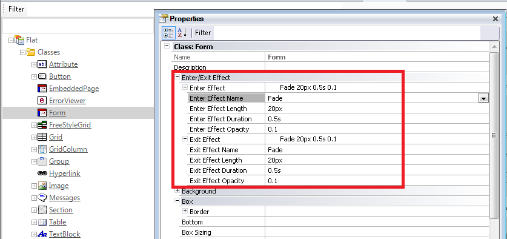

In the Form class (or descendants) of the GeneXus Web Theme object, some properties allow the designer to configure the effect in the navigation of web pages. The designer may configure the enter effect of a web page that is loaded, and the exit effect of the web page that exits the screen. This helps in the case of using Single Page Applications, to give the user the perception of navigability of separate logical pages in the application. The referred properties are as follows: Enter EffectEffect that takes place when the new page loads.
Exit EffectEffect that takes place when the page exits.
Note:When the effect is "Fade", its length is not considered. In order to configure these effects, we must edit the GeneXus Theme, and change the settings of the Form class associated with the web page:  Transitions take place in two cases (the browser needs to support animations, CSS transitions and the History API): 1. When navigating from page A to page B (the navigation can be done with Call command, Link Command, or in any way available in GeneXus to go from one page to another). 2. When a web component B is created in a control where another web component A has been previously created:
Event Start
WebCom1.Object = A.Create()
EndEvent
Event Enter
WebCom1.Object = B.Create()
EndEvent
The effects apply as follows:
NoteIf the browser does not support animations or transitions or History API, effects are not considered.
|
| Backlinks |
| Single Page Applications |